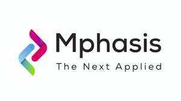

WORK EXPERIENCE
Member Technical
Aug 2022- Dec 2023
- Worked on HWSE (Health And Welfare Service Engine ) product, where I developed APIs using Spring Boot to implement core functionalities and serve requests.
- Reduced Manual testing by 70% by Automation. Analyzed the business requirements, wrote appropriate Zephyr test cases, executed test cases, executed Manual
testing and logged bugs.
- Worked on Release Activities , Deployment and Certification.
- Experience in managing projects following Scrum Agile Methodology.(Daily Scrum Meeting, Planning Poker, Sprint Backlog, Sprint Grooming, Sprint Reviews, 1on1 meeting)
Skills And Techcnologies Worked On
- Java, REST APIs, Backend development ,Automation, Springboot, Maven, Jenkins, Splunk, MongoDB ,Postman, Selenium WebDriver, Cucumber.
Software Engineer Intern
June 2022- July 2022

- Reduced Manual testing by 70% by Automation.